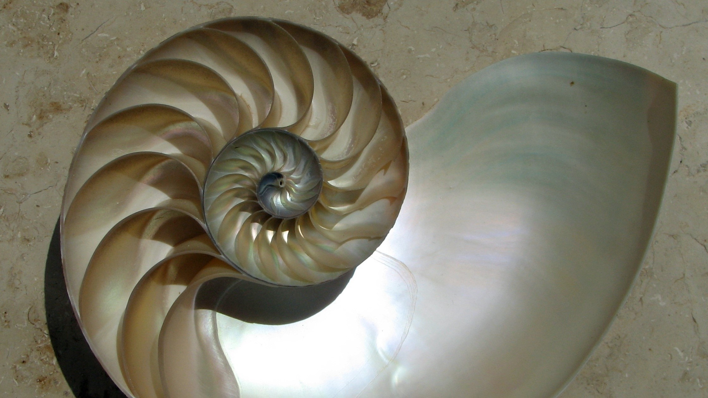
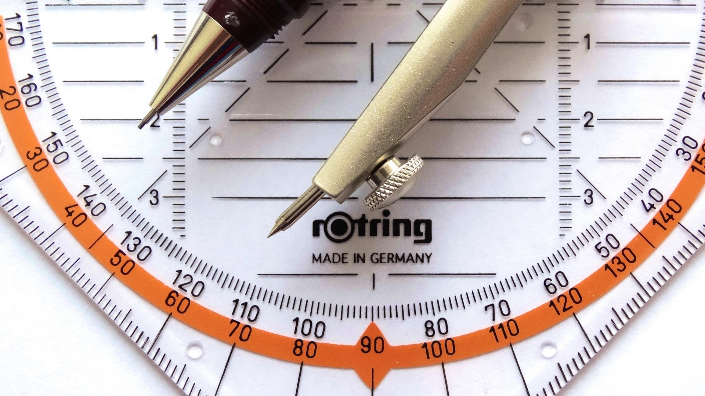

Gondolkodási módszerek és diszkrét matematika
A diszkrét matematika a matematika olyan ága, amely nem folytonos változókkal, hanem különálló, független (diszkrét) értékekkel és objektumokkal foglalkozik.
Algebra
Az algebra a matematika egyik fő ága, amely a számok helyett betűket és változókat használ az ismeretlen mennyiségek és a matematikai műveletek általános szabályainak leírására. Segítségével egyenleteket oldunk meg, és összefüggéseket vizsgálunk.


Függvények
A függvény olyan egyértelmű hozzárendelés, amely egy halmaz minden eleméhez egy másik halmaz egyetlen elemét rendeli hozzá.
Geometria
A geometria a matematika egy régi ága, amely a tér alakzataival, méreteivel és a köztük lévő kapcsolatokkal foglalkozik. A szó eredeti jelentése "földmérés".


Alkalmazott matematika
Az alkalmazott matematika a matematika azon ága, amely a matematikai módszereket a tudomány, a mérnöki tudományok, az ipar, a pénzügyek és a kereskedelem valós problémáinak megoldására használja.